صفحة 16 كلمة · نسبة التشكيل 0.65
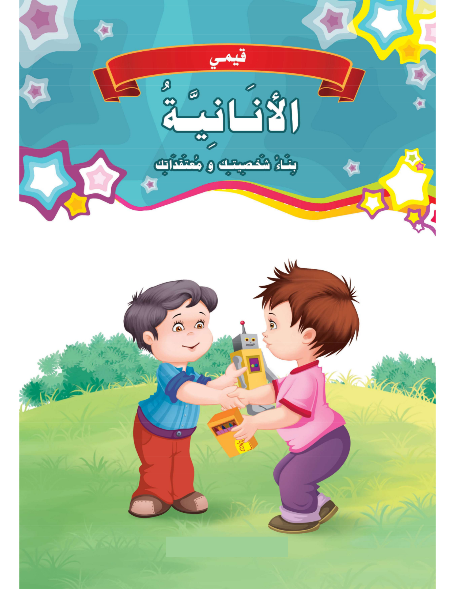
قيمي الأَنَانِيَّةُ بِنَاءُ شَخْصِيَتِك و مُعْتَقَدَاتِك
صفحة 2161 كلمة · نسبة التشكيل 0.08
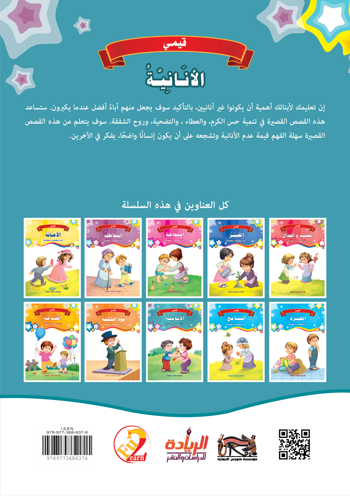
قيمي الأَنَانِيَّةُ إن تعليمك لأبنائك أهمية أن يكونوا غير أنانيين، بالتأكيد سوف يجعل منهم أباءً أفضل عندما يكبرون. ستساعد هذه القصص القصيرة في تنمية حس الكرم، والعطاء ، والتضحية، وروح الشفقة. سوف يتعلم من هذه القصص القصيرة سهلة الفهم قيمة عدم الأنانية وتشجعه على أن يكون إنسانًا واضحًا، يفكر في الآخرين. كل العناوين في هذه السلسلة قيمي الأَمَانَةُ بناء شخصيتك و معتقداتك مؤسسة حورس الدولية قيمي التَّعَاطُفُ بناء شخصيتك و معتقداتك مؤسسة حورس الدولية قيمي الشَّجَاعَةُ بناء شخصيتك و معتقداتك مؤسسة حورس الدولية قيمي الصَّبْرُ بناء شخصيتك و معتقداتك مؤسسة حورس الدولية قيمي الغَضَبُ و الجِدَالُ بناء شخصيتك و معتقداتك مؤسسة حورس الدولية قيمي القَنَاعَةُ بناء شخصيتك و معتقداتك مؤسسة حورس الدولية قيمي قُوَّةُ الكَلِمَةِ بناء شخصيتك و معتقداتك مؤسسة حورس الدولية قيمي الأَنَانِيَّةُ بناء شخصيتك و معتقداتك مؤسسة حورس الدولية قيمي التَّسَامُحُ بناء شخصيتك و معتقداتك مؤسسة حورس الدولية قيمي الغَيْرَةُ بناء شخصيتك و معتقداتك مؤسسة حورس الدولية I.S.B.N 978-977-368-637-6 9789773686376 Fu 2 earn الريّادة للدراسات والنشر مؤسسة حورس الدولية
صفحة 3104 كلمة · نسبة التشكيل 0.21
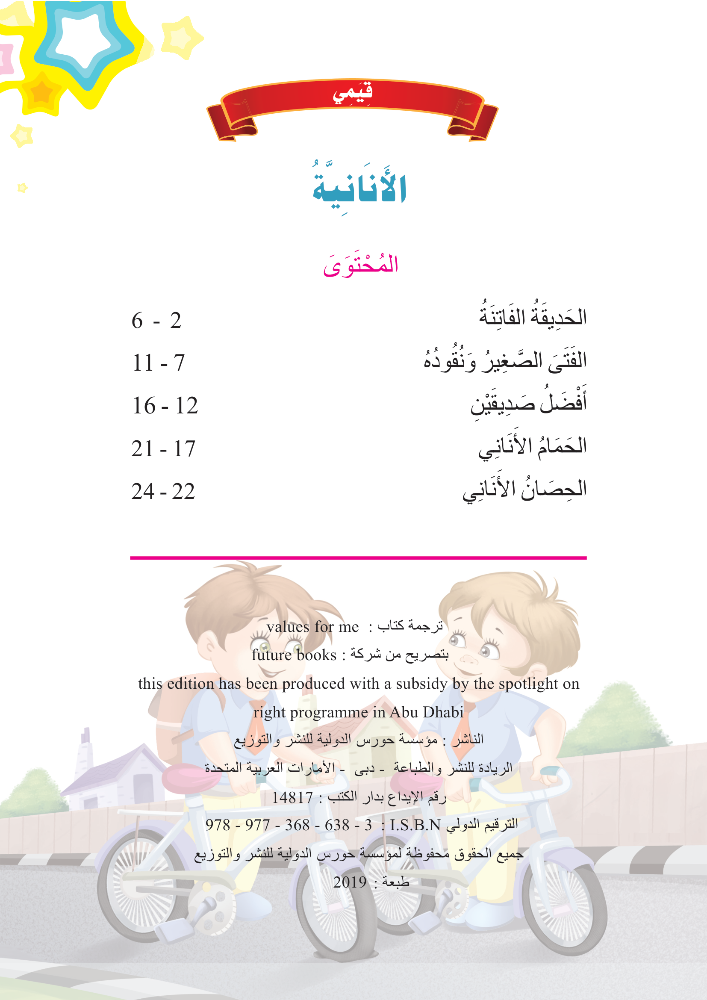
قِيَمِي اَلْأَنَانِيَّةُ المُحْتَوَىٰ 6 - 2 الحَدِيقَةُ الفَاتِنَةُ 11 - 7 الفَتَى الصَّغِيرُ وَنُقُودُهُ 16 - 12 أَفْضَلُ صَدِيقَيْنِ 21 - 17 الحَمَامُ الأَنَانِي 24 - 22 الحِصَانُ الأَنَانِي ترجمة كتاب : values for me بتصريح من شركة : future books this edition has been produced with a subsidy by the spotlight on right programme in Abu Dhabi الناشر : مؤسسة حورس الدولية للنشر والتوزيع الريادة للنشر والطباعة - دبي - الأمارات العربية المتحدة رقم الإيداع بدار الكتب : 14817 الترقيم الدولي I.S.B.N : 978 - 977 - 368 - 638 - 3 جميع الحقوق محفوظة لمؤسسة حورس الدولية للنشر والتوزيع طبعة : 2019
صفحة 423 كلمة · نسبة التشكيل 0.72
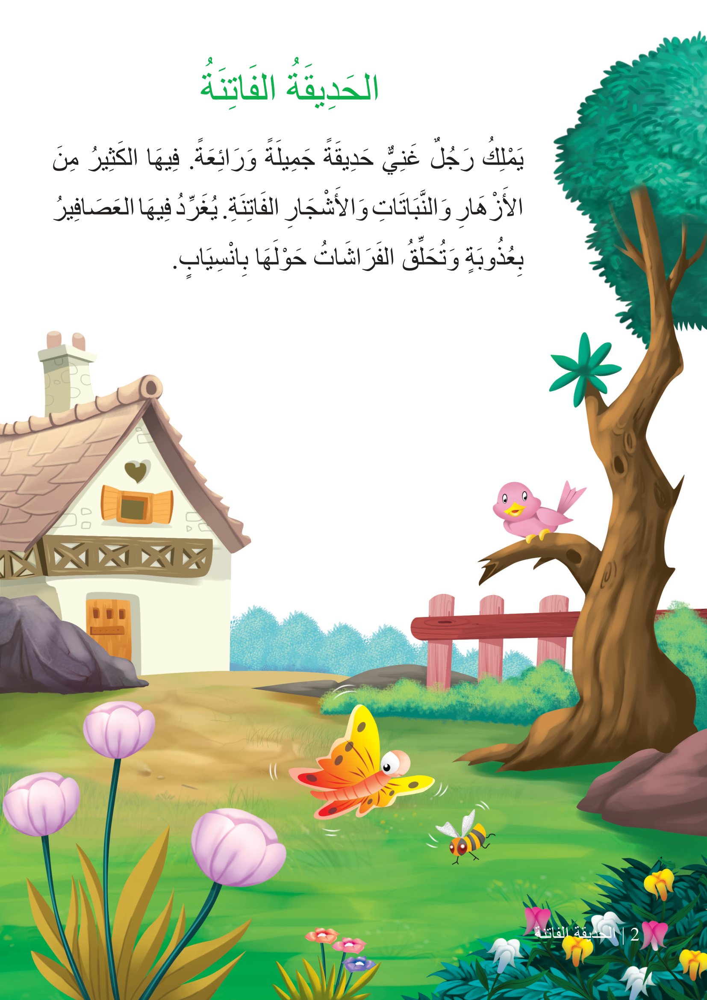
اَلحَدِيقَةُ الفَاتِنَةُ يَمْلِكُ رَجُلٌ غَنِيٌّ حَدِيقَةً جَمِيلَةً وَرَائِعَةً. فِيهَا الكَثِيرُ مِنَ الأَزْهَارِ وَالنَّبَاتَاتِ وَالأَشْجَارِ الفَاتِنَةِ. يُغَرِّدُ فِيهَا العَصَافِيرُ بِعُذُوبَةٍ وَتُحَلِّقُ الفَرَاشَاتُ حَوْلَهَا بِانْسِيَابٍ.
صفحة 524 كلمة · نسبة التشكيل 0.66
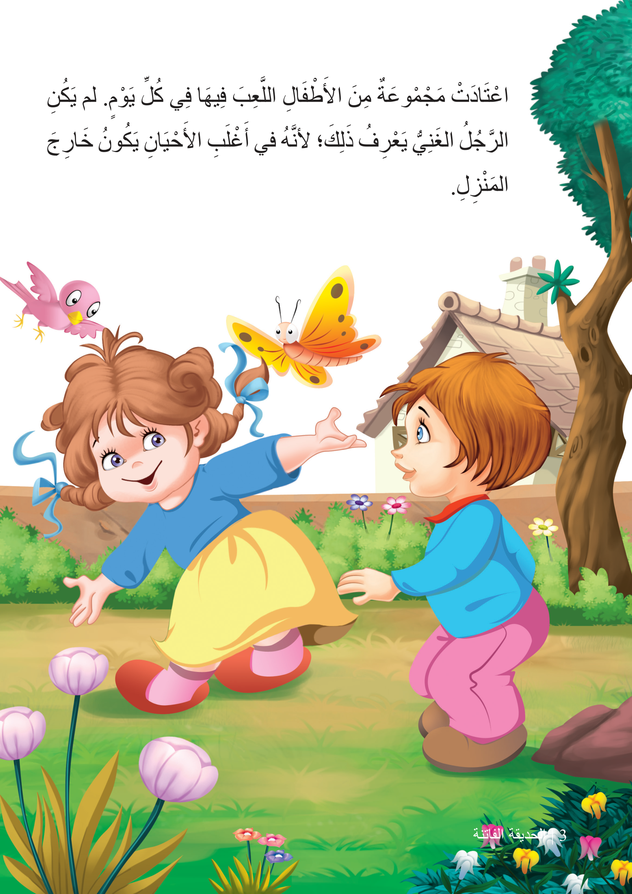
اعْتَادَتْ مَجْمُوعَةٌ مِنَ الأَطْفَالِ اللَّعِبَ فِيهَا فِي كُلِّ يَوْمٍ. لم يَكُنِ الرَّجُلُ الغَنِيُّ يَعْرِفُ ذَلِكَ؛ لأَنَّهُ فِي أَغْلَبِ الأَحْيَانِ يَكُونُ خَارِجَ المَنْزِلِ. الحديقة الفاتنة
صفحة 635 كلمة · نسبة التشكيل 0.65
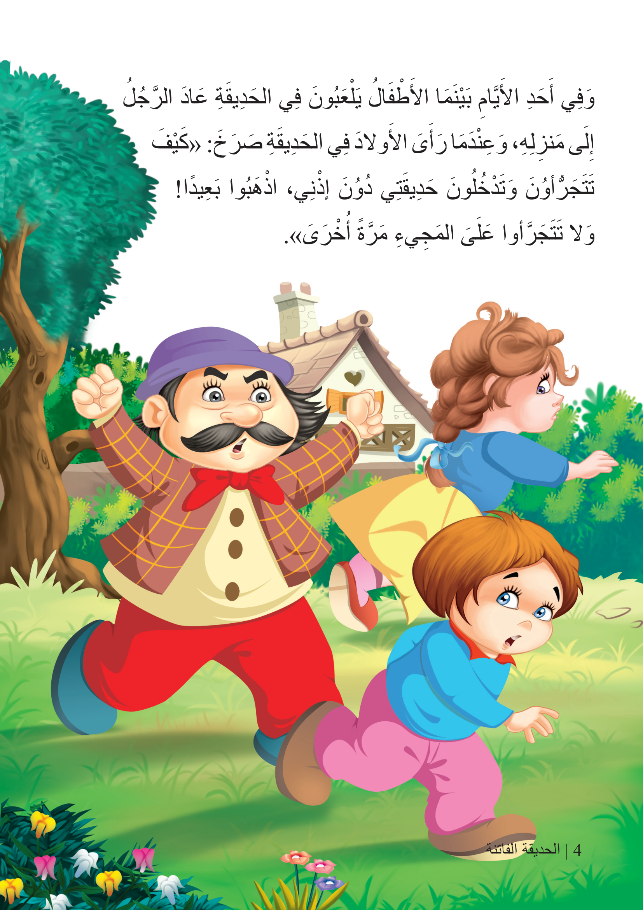
وَفِي أَحَدِ الأَيَّامِ بَيْنَمَا الأَطْفَالُ يَلْعَبُونَ فِي الحَدِيقَةِ عَادَ الرَّجُلُ إِلَى مَنزِلِهِ، وَعِنْدَمَا رَأَى الأَولادَ فِي الحَدِيقَةِ صَرَخَ: «كَيْفَ تَتَجَرَّأُونَ وَتَدْخُلُونَ حَدِيقَتِي دُونَ إِذْنِي، اذْهَبُوا بَعِيدًا! وَلَا تَتَجَرَّأُوا عَلَى المَجِيءِ مَرَّةً أُخْرَى». | الحديقة الفاتنة
صفحة 733 كلمة · نسبة التشكيل 0.67
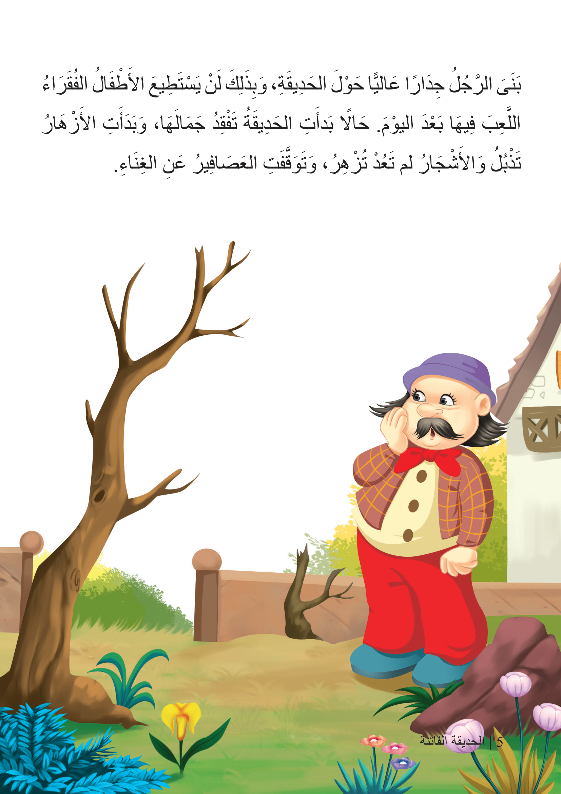
بَنَى الرَّجُلُ جِدَارًا عَالِيًّا حَوْلَ الحَدِيقَةِ، وَبِذَلِكَ لَنْ يَسْتَطِيعَ الأَطْفَالُ الفُقَرَاءُ اللَّعِبَ فِيهَا بَعْدَ اليَوْمِ. حَالًا بَدَأَتِ الحَدِيقَةُ تَفْقِدُ جَمَالَهَا، وَبَدَأَتِ الأَزْهَارُ تَذْبُلُ وَالأَشْجَارُ لم تَعُدْ تُزْهِرُ، وَتَوَقَّفَتِ العَصَافِيرُ عَنِ الغِنَاءِ. الحديقة الفاتنة
صفحة 835 كلمة · نسبة التشكيل 0.79
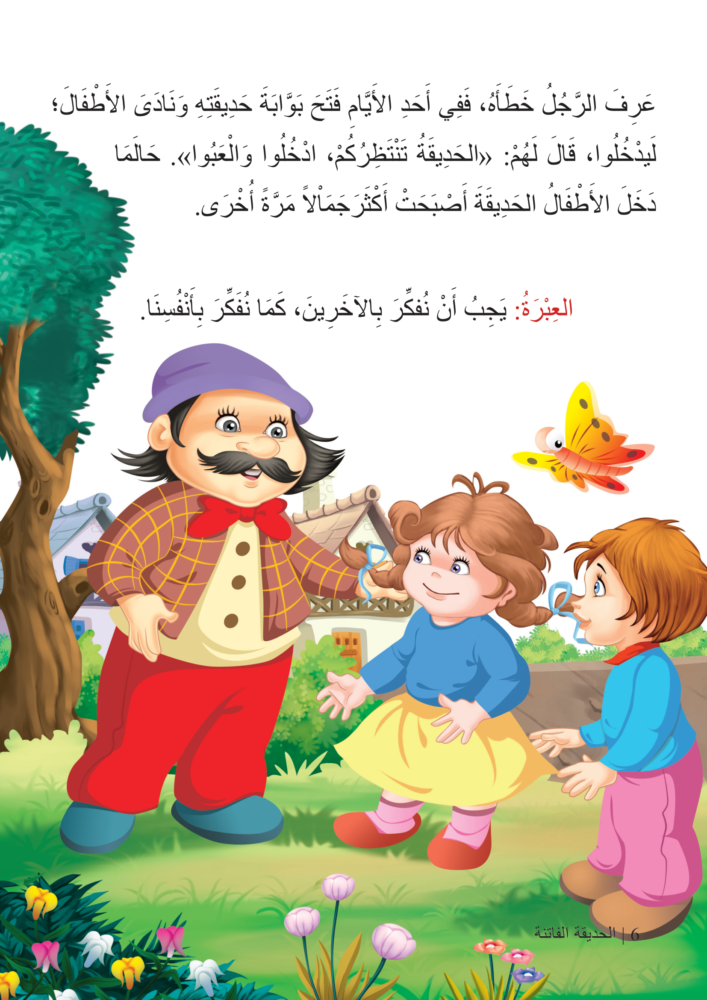
عَرَفَ الرَّجُلُ خَطَأَهُ، فَفِي أَحَدِ الأَيَّامِ فَتَحَ بَوَّابَةَ حَدِيقَتِهِ وَنَادَى الْأَطْفَالَ؛ لِيَدْخُلُوا، قَالَ لَهُمْ: «الحَدِيقَةُ تَنْتَظِرُكُمْ، ادْخُلُوا وَالْعَبُوا». حَالَمَا دَخَلَ الْأَطْفَالُ الحَدِيقَةَ أَصْبَحَتْ أَكْثَرَ جَمَالًا مَرَّةً أُخْرَى. العِبْرَةُ: يَجِبُ أَنْ نُفَكِّرَ بِالآخَرِينَ، كَمَا نُفَكِّرَ بِأَنْفُسِنَا.
صفحة 919 كلمة · نسبة التشكيل 0.79
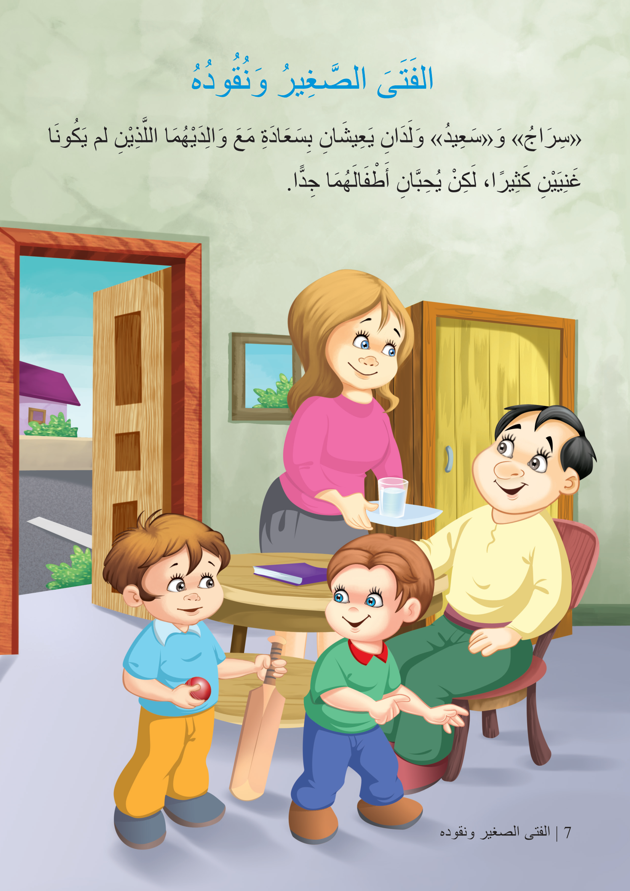
اَلفَتَى الصَّغِيرُ وَنُقُودُهُ «سِرَاجُ» وَ«سَعِيدُ» وَلَدَانِ يَعِيشَانِ بِسَعَادَةٍ مَعَ وَالِدَيْهُمَا اللَّذَيْنِ لَم يَكُونَا غَنِيَّيْنِ كَثِيرًا، لَكِنْ يُحِبَّانِ أَطْفَالَهُمَا جِدًّا.
صفحة 1032 كلمة · نسبة التشكيل 0.72
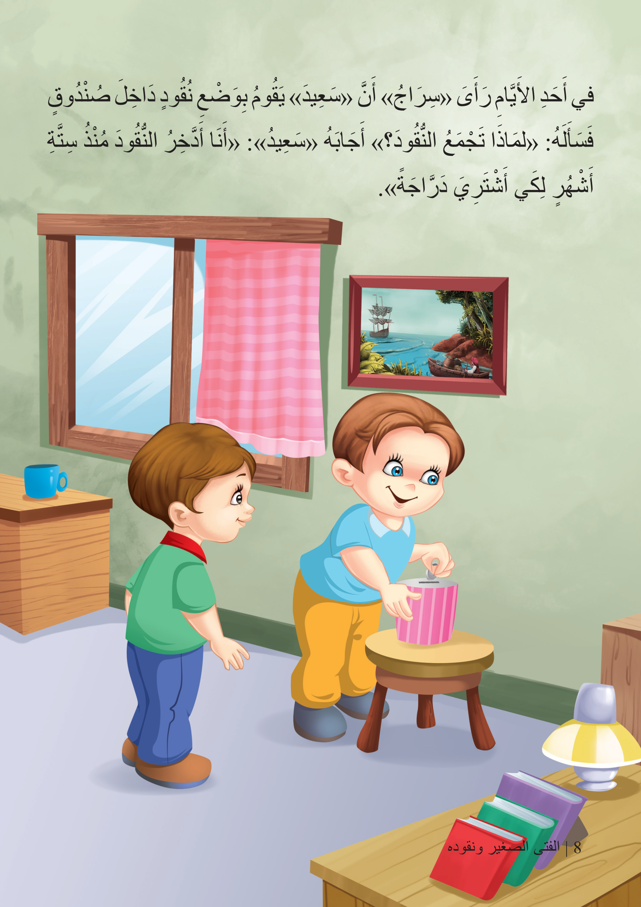
فِي أَحَدِ الأَيَّامِ رَأَى «سِراجٌ» أَنَّ «سَعِيدَ» يَقُومُ بِوَضْعِ نُقُودٍ دَاخِلَ صُنْدُوقٍ فَسَأَلَهُ: «لِمَاذَا تَجْمَعُ النُّقُودَ؟» أَجَابَهُ «سَعِيدٌ»: «أَنَا أَدَّخِرُ النُّقُودَ مُنْذُ سِتَّةِ أَشْهُرٍ لِكَي أَشْتَرِيَ دَرَّاجَةً». 8 | الفتى الصغير ونقوده
صفحة 1125 كلمة · نسبة التشكيل 0.66
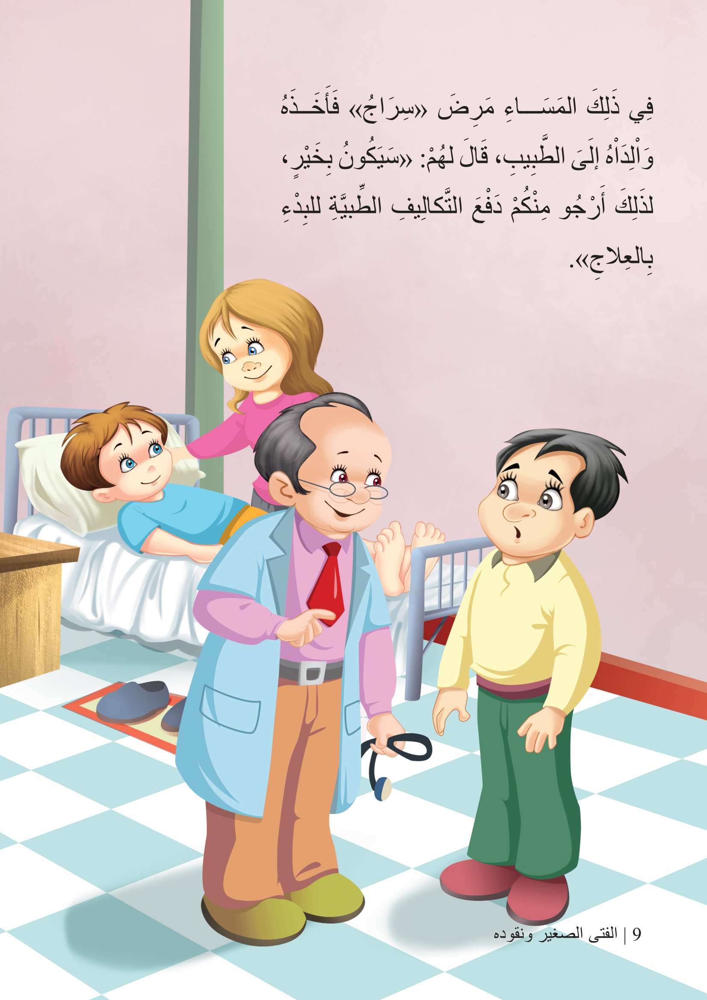
فِي ذَلِكَ المَسَاءِ مَرِضَ «سِرَاجُ» فَأَخَذَهُ وَالِدَاهُ إِلَى الطَّبِيبِ، قَالَ لَهُمْ: «سَيَكُونُ بِخَيْرٍ، لِذَلِكَ أَرْجُو مِنْكُمْ دَفْعَ التَّكالِيفِ الطِّبِّيَّةِ لِلبَدْءِ بِالعِلاجِ». | الفتى الصغير ونقوده
صفحة 1221 كلمة · نسبة التشكيل 0.76
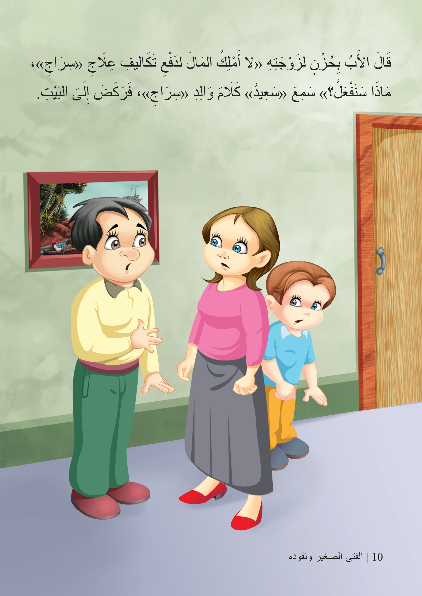
قَالَ الأَبُ بِحُزْنٍ لِزَوْجَتِهِ «لا أَمْلِكُ المَالَ لَدَفْعِ تَكَالِيفِ عِلَاجِ «سِرَاجِ»، مَاذَا سَنَفْعَلُ؟» سَمِعَ «سَعِيدٌ» كَلَامَ وَالِدِ «سِرَاجٍ»، فَرَكَضَ إِلَى البَيْتِ.
صفحة 1341 كلمة · نسبة التشكيل 0.77
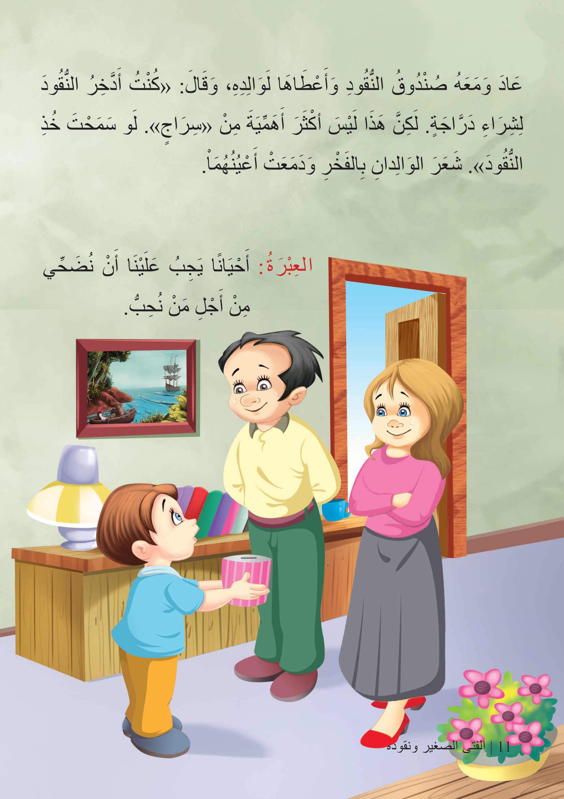
عَادَ وَمَعَهُ صُنْدُوقُ النُّقُودِ وَأَعْطَاهَا لِوَالِدِهِ، وَقَالَ: «كُنْتُ أَدَّخِرُ النُّقُودَ لِشِرَاءِ دَرَّاجَةٍ. لَكِنَّ هَذَا لَيْسَ أَكْثَرَ أَهَمَّيَّةَ مِنْ «سِرَاجِ». لَو سَمَحْتَ خُذِ النُّقُودَ». شَعَرَ الوَالِدانِ بِالفَخْرِ وَدَمَعَتْ أَعْيُنُهُمَا. العِبْرَةُ: أَحْيَانًا يَجِبُ عَلَيْنَا أَنْ نُضَحِّي مِنْ أَجْلِ مَنْ نُحِبُّ. الفتى الصغير ونقوده
صفحة 1419 كلمة · نسبة التشكيل 0.82
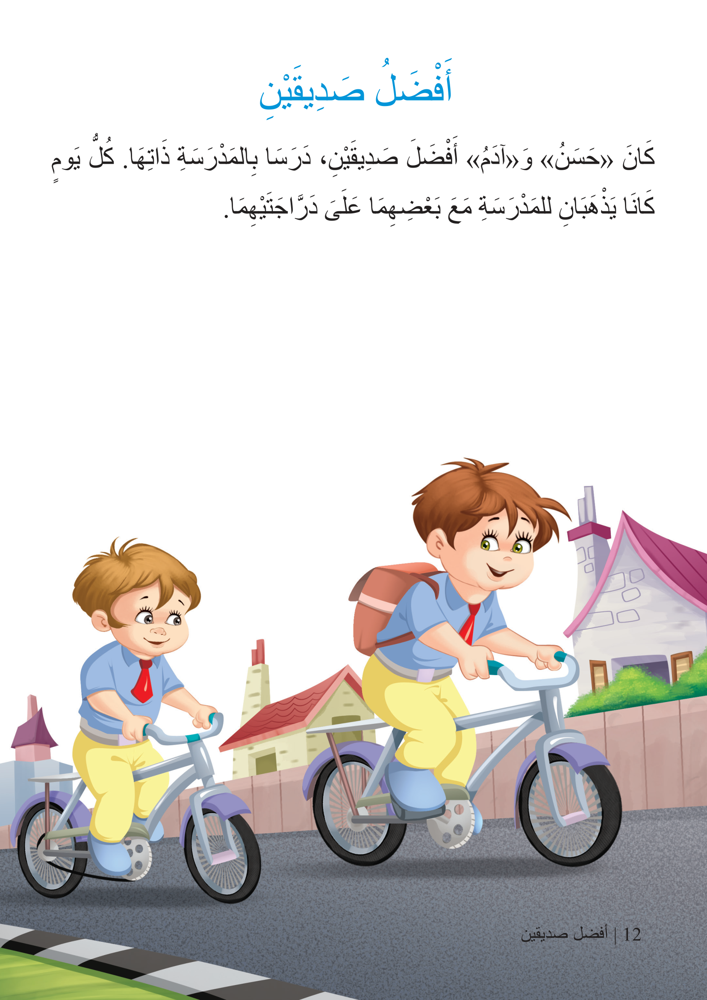
أَفْضَلُ صَدِيقَيْنِ كَانَ «حَسَنُ» وَ«آدَمُ» أَفْضَلَ صَدِيقَيْنِ، دَرَسَا بِالمَدْرَسَةِ ذَاتِهَا. كُلُّ يَومٍ كَانَا يَذْهَبَانِ لِلمَدْرَسَةِ مَعَ بَعْضِهِمَا عَلَى دَرَّاجَتَيْهِمَا.
صفحة 1536 كلمة · نسبة التشكيل 0.79
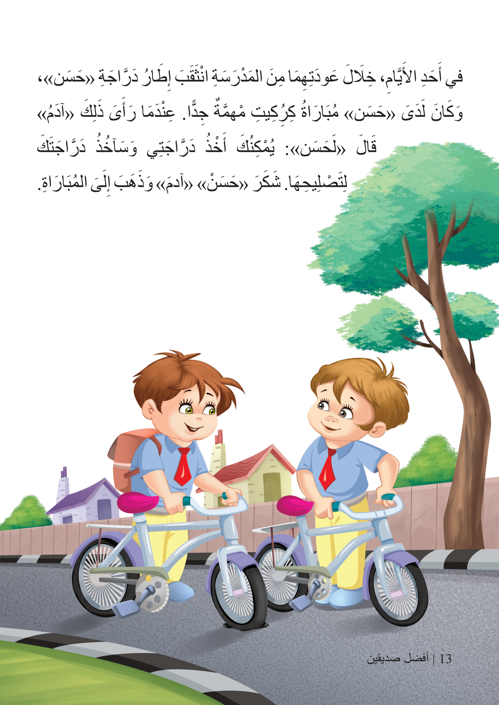
فِي أَحَدِ الأَيَّامِ، خِلَالَ عَودَتِهِمَا مِنَ المَدْرَسَةِ انْثَقَبَ إِطَارُ دَرَّاجَةِ «حَسَن»، وَكَانَ لَدَى «حَسَن» مُبَارَاةُ كِرِكِيتٍ مُهِمَّةٌ جدًّا. عِنْدَمَا رَأَى ذَلِكَ «آدَمُ» قَالَ «لَحَسَن»: يُمْكِنُكَ أَخْذُ دَرَّاجَتِي وَسَآخُذُ دَرَّاجَتَكَ لِتَصْلِيحِهَا. شَكَرَ «حَسَنْ» «آدَمَ» وَذَهَبَ إِلَى المُبَارَاةِ.
صفحة 1629 كلمة · نسبة التشكيل 0.70
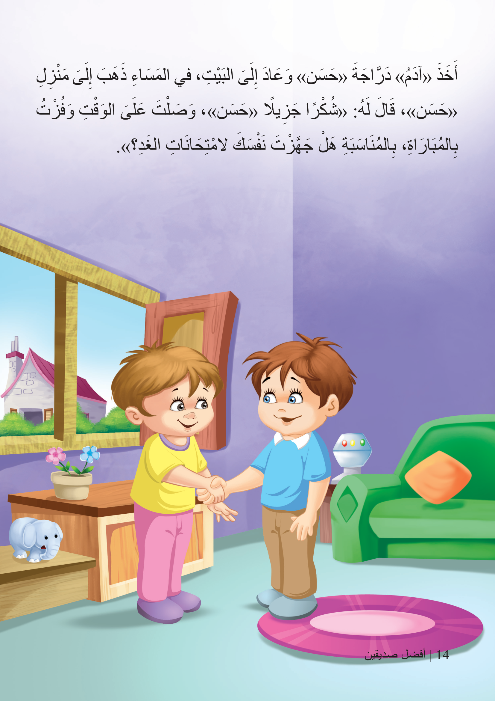
أَخَذَ «آدَمُ» دَرَّاجَةَ «حَسَن» وَعَادَ إِلَى البَيْتِ، في المَسَاءِ ذَهَبَ إِلَى مَنْزِلِ «حَسَن»، قَالَ لَهُ: «شُكْرًا جَزِيلًا «حَسَن»، وَصَلْتَ عَلَى الوَقْتِ وَفُزْتُ بِالمُبَارَاة، بِالمُنَاسَبَة هَلْ جَهَّزتَ نَفْسَكَ لامْتِحَانَاتِ الغَدِ؟».
صفحة 1727 كلمة · نسبة التشكيل 0.80
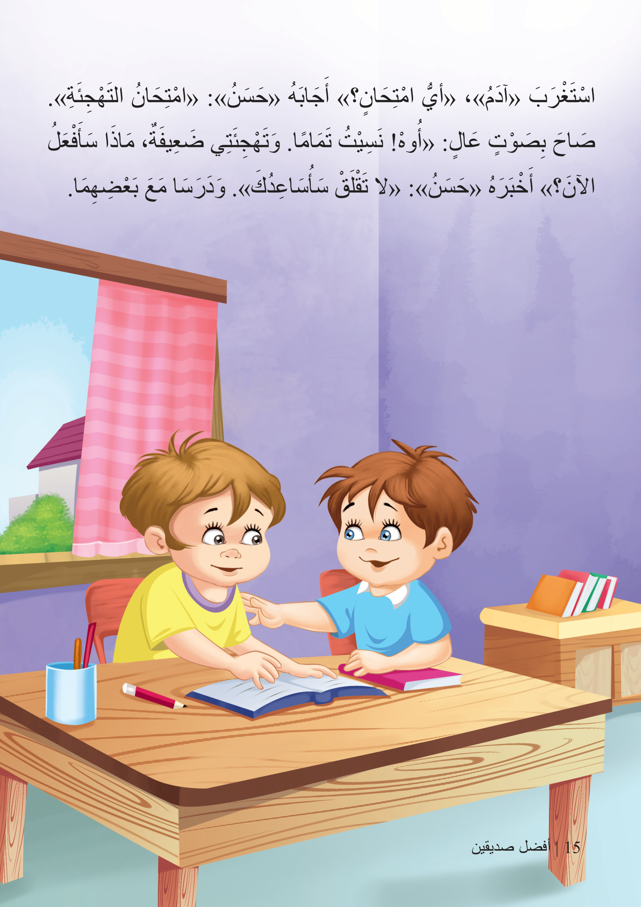
اسْتَغْرَبَ «آدَمُ»، «أَيُّ امْتِحَانٍ؟» أَجَابَهُ «حَسَنٌ»: «امْتِحَانُ التَّهْجِئَةِ». صَاحَ بِصَوْتٍ عَالٍ: «أُوهْ! نَسِيتُ تَمَامًا. وَتَهْجِئَتِي ضَعِيفَةٌ، مَاذَا سَأَفْعَلُ الآنَ؟» أَخْبَرَهُ «حَسَنٌ»: «لَا تَقْلَقْ سَأُسَاعِدُكَ». وَدَرَسَا مَعَ بَعْضِهِمَا.
صفحة 1823 كلمة · نسبة التشكيل 0.75
فِي اليَومِ التَّالِي، قَدَّمَ «آدَمُ» الامْتِحَانَ بِشَكْلٍ مُمْتَازٍ وَحَصَلَ هُوَ وَ«حَسَنُ» عَلَى العَلامَاتِ التَّامَّةِ. أَثْنَىَ عَلَيْهِمَا مُعَلِّمُ الصَّفِّ. العِبْرَةُ: سَاعِدْ أَصْدِقَاءَكَ فِي المِحَنِ.
صفحة 1915 كلمة · نسبة التشكيل 0.65
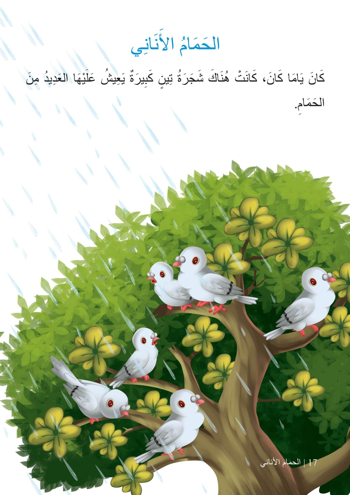
الحَمَامُ الأَنَانِي كَانَ يَامَا كَانَ، كَانَتْ هُنَاكَ شَجَرَةُ تِينٍ كَبِيرَةٌ يَعِيشُ عَلَيْهَا العَدِيدُ مِنَ الحَمَامِ.
صفحة 2028 كلمة · نسبة التشكيل 0.72
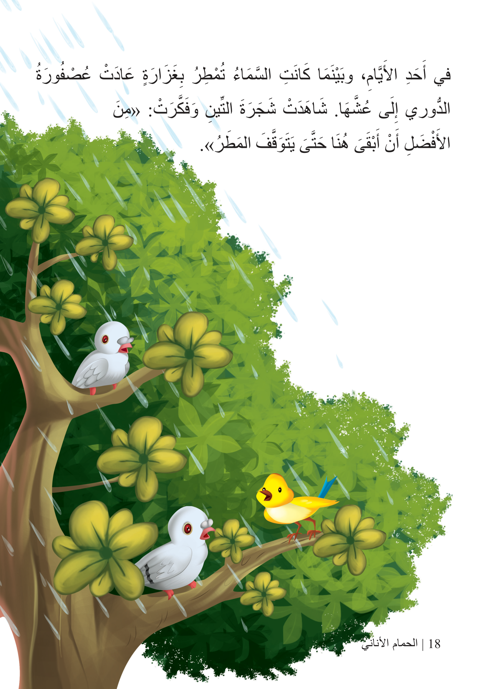
فِي أَحَدِ الأَيَّامِ، وبَيْنَمَا كَانَتِ السَّمَاءُ تُمْطِرُ بِغَزَارَةٍ عَادَتْ عُصْفُورَةُ الدُّورِي إِلَى عُشِّهَا. شَاهَدَتْ شَجَرَةَ التِّينِ وَفَكَّرَتْ: «مِنَ الأَفْضَلِ أَنْ أَبْقَىَ هُنَا حَتَّى يَتَوَقَّفَ المَطَرُ». | الحمام الأناني
صفحة 2133 كلمة · نسبة التشكيل 0.69
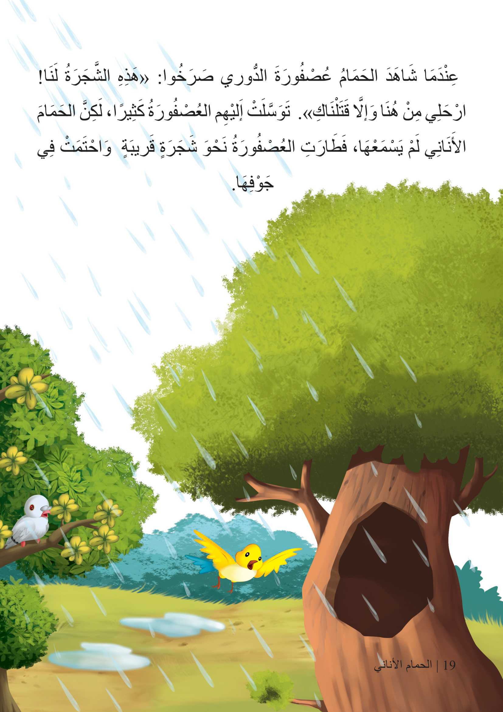
عِنْدَمَا شَاهَدَ الحَمَامُ عُصْفُورَةَ الدُّورِي صَرَخُوا: «هَذِهِ الشَّجَرَةُ لَنَا! ارْحَلِي مِنْ هُنَا وَإِلَّا قَتَلْنَاكِ». تَوَسَّلَتْ إِلَيْهِم العُصْفُورَةُ كَثِيرًا، لَكِنَّ الحَمَامَ الأَنَانِي لَمْ يَسْمَعْهَا، فَطَارَتِ العُصْفُورَةُ نَحْوَ شَجَرَةٍ قَرِيبَةٍ وَاحْتَمَتْ فِي جَوْفِهَا. الحمام الأناني
صفحة 2224 كلمة · نسبة التشكيل 0.72
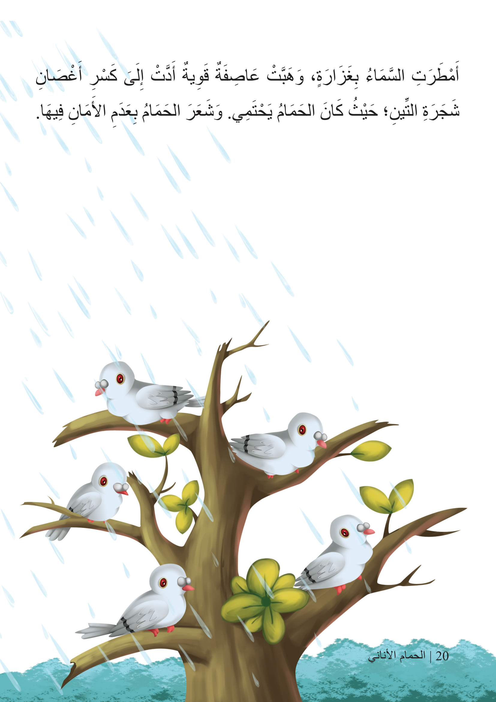
أَمْطَرَتِ السَّمَاءُ بِغَزَارَةٍ، وَهَبَّتْ عَاصِفَةٌ قَوِيَّةٌ أَدَّتْ إِلَىٰ كَسْرِ أَعْصَانِ شَجَرَةِ التِّينِ؛ حَيْثُ كَانَ الحَمَامُ يَحْتَمِي. وَشَعَرَ الحَمَامُ بِعَدَمِ الأَمَانِ فِيهَا. | الحمام الأناني
صفحة 2333 كلمة · نسبة التشكيل 0.75
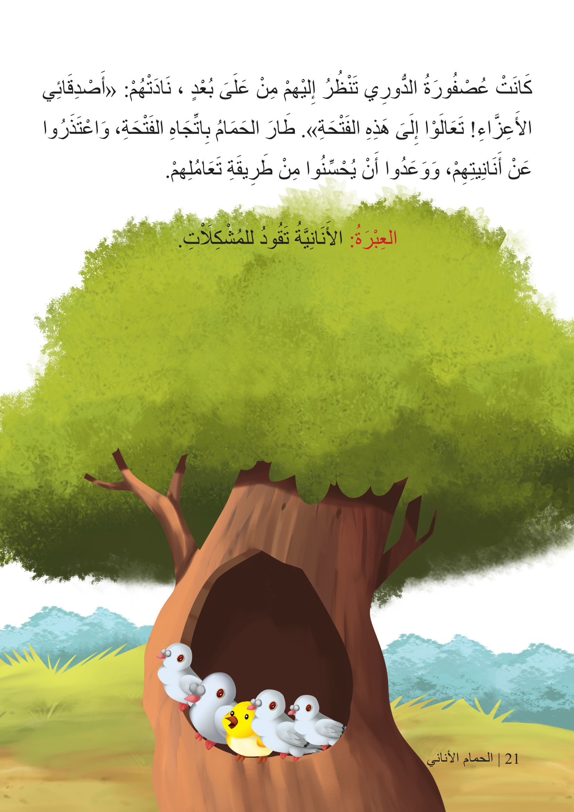
كَانَتْ عُصْفُورَةُ الدُّورِي تَنْظُرُ إِلَيْهِمْ مِنْ عَلَى بُعْدٍ ، نَادَتْهُمْ: «أَصْدِقَائِي الأَعِزَّاء! تَعَالَوُا إِلَى هَذِهِ الفَتْحَةِ». طَارَ الحَمَامُ بِاتِّجَاهِ الفَتْحَةِ، وَاعْتَذَرُوا عَنْ أَنَانِيتِهِمْ، وَوَعَدُوا أَنْ يُحَسِّنُوا مِنْ طَرِيقَةِ تَعَامُلِهِمْ. العِبْرَةُ: الأَنَانِيَّةُ تَقُودُ لِلمُشْكِلَاتِ.
صفحة 2439 كلمة · نسبة التشكيل 0.68
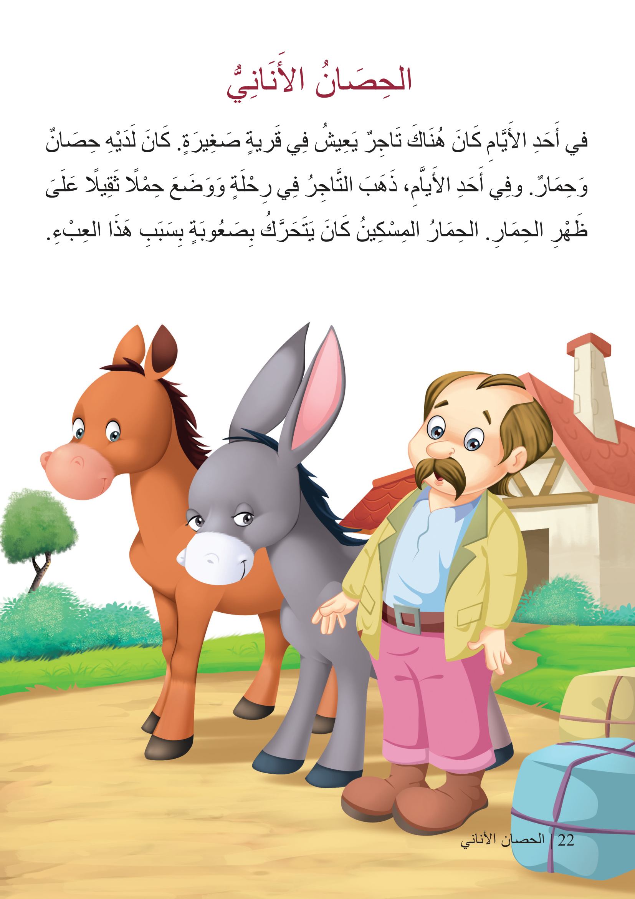
الحِصَانُ الأَنَانِيُّ فِي أَحَدِ الأَيَّامِ كَانَ هُنَاكَ تَاجِرٌ يَعِيشُ فِي قَريَةٍ صَغِيرَةٍ. كَانَ لَدَيْهِ حِصَانٌ وَحِمَارٌ. وفِي أَحَدِ الأَيَّامِ، ذَهَبَ التَّاجِرُ فِي رِحْلَةٍ وَوَضَعَ حِمْلًا ثَقِيلًا عَلَى ظَهْرِ الحِمَارِ. الحِمَارُ المِسْكِينُ كَانَ يَتَحَرَّكُ بِصُعُوبَةٍ بِسَبَبِ هَذَا العِبْءِ. الحصان الأناني
صفحة 2540 كلمة · نسبة التشكيل 0.74
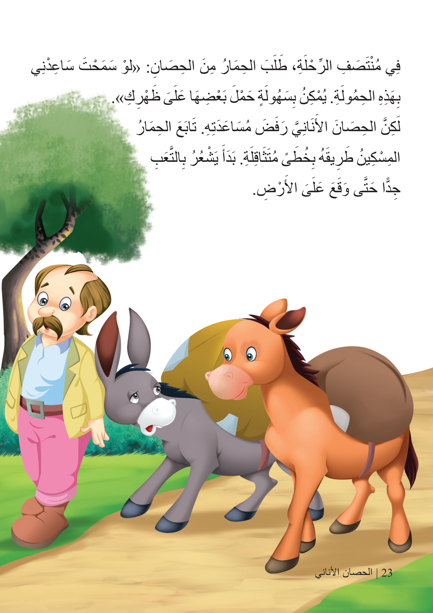
فِي مُنْتَصَفِ الرِّحْلَةِ، طَلَبَ الحِمَارُ مِنَ الحِصَانِ: «لَوْ سَمَحْتَ سَاعِدْنِي بِهَذِهِ الحُمُولَةِ. يُمْكِنُ بِسُهُولَةٍ حَمْلَ بَعْضِهَا عَلَى ظَهْرِكِ». لَكِنَّ الحِصَانَ الأَنَانِيَّ رَفَضَ مُسَاعَدَتِهِ. تَابَعَ الحِمَارُ المِسْكِينُ طَرِيقَهُ بِخُطَىً مُتَثَاقِلَةٍ. بَدَأَ يَشْعُرُ بِالتَّعَبِ جِدًّا حَتَّى وَقَعَ عَلَى الأَرْضِ. | الحصان الأناني
صفحة 2630 كلمة · نسبة التشكيل 0.71
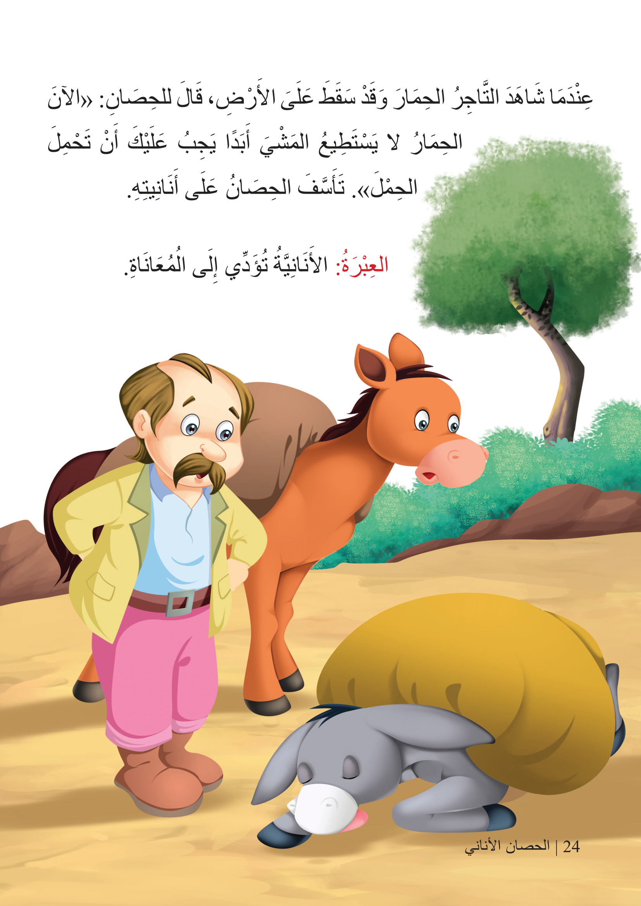
عِنْدَمَا شَاهَدَ التَّاجِرُ الحِمَارَ وَقَدْ سَقَطَ عَلَى الأَرْضِ، قَالَ للحِصَانِ: «الآنَ الحِمَارُ لا يَسْتَطِيعُ المَشْيَ أَبَدًا يَجِبُ عَلَيْكَ أَنْ تَحْمِلَ الحِمْلَ». تَأَسَّفَ الحِصَانُ عَلَى أَنَانِيَّتِهِ. العِبْرَةُ: الأَنَانِيَّةُ تُؤَدِّي إِلَى المُعَانَاةِ.